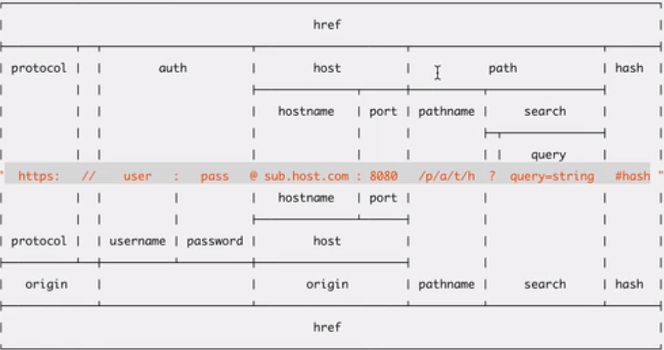
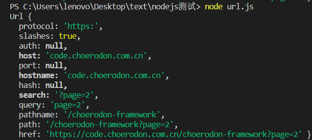
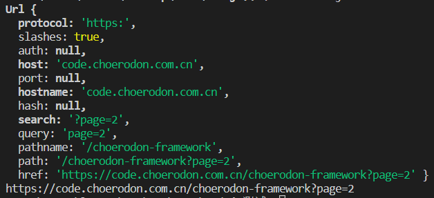
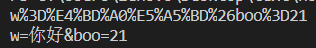
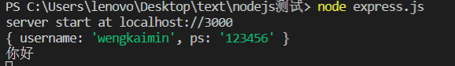
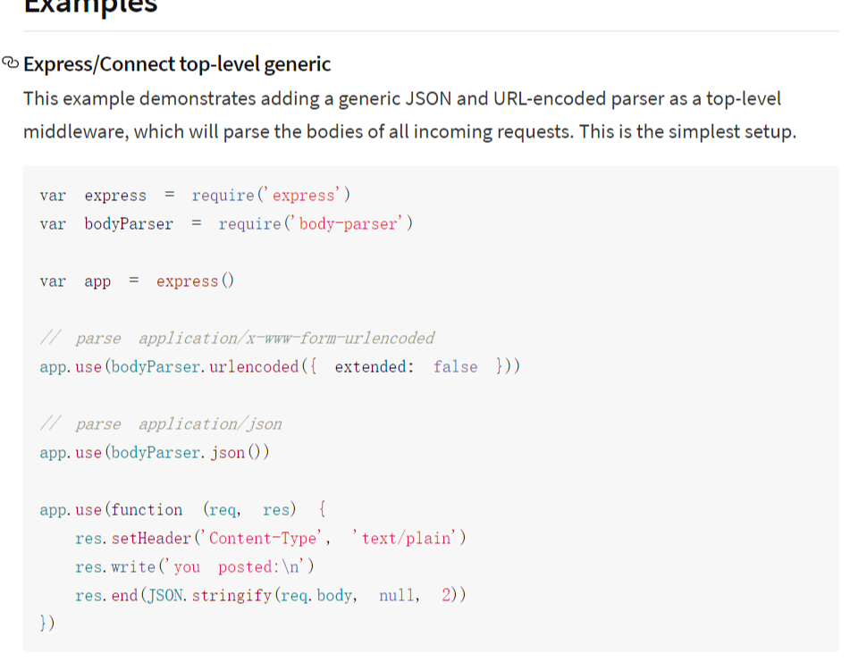
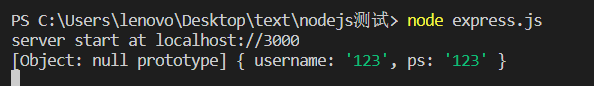
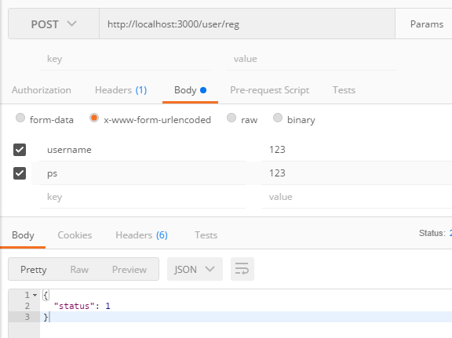
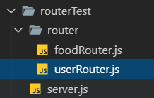

nodejs学习记录
1.node自带模块fs文件管理
1.1 readdir和readdirSync的区别
两者都用与读取文件或者文件夹里的文件有啥
fs.readdir(path[, options], callback)异步函数，需要传入一个回调
pathoptionsencoding默认值:'utf8'。withFileTypes默认值:false。
callback(两个参数，错误回调优先)err默认值为nullfiles
错误处理代码：
let dirs = fs.readdir('./hello.txt', (err, files) => {
if(err){
console.log(err);
}else{
console.log(files);
}
})fs.readdirSync(path[, options]) 同步函数
pathoptionsencoding默认值:'utf8'。withFileTypes默认值:false。
- 返回:
错误处理代码：
try {
let dirs = fs.readdirSync('./node.js'); //异步
}
catch (err) {
console.log('粗ucol');
console.log(err)
}因为同步函数没有异步那样的处理错误机制，因此需要配合try catch才能捕获错误的同时又不暂停下面的代码运行。
1.2 mkdir和mkdirSync 创建文件
1.3 rename 重命名 和 rmdir删除文件
1.4 writeFile 覆盖写入 和appendFile添加写入文件
1.5 readFile 读取文件内容(二进制数据流)
fs.readFile('name.txt',(err,data)=>{
console.log(data.toString('UTF-8'))
})可以用toString(‘UTF-8’)的方法将文字提取出来；
或者直接在配置项中
fs.readFile('name.txt', 'UTF-8', (err, data) => {
console.log(data)
})1.6 fs.stat(path[, options], callback)
2. url内置模块

2.1 url.parse()和url.format()
url.parse()将其解析成一个url对象，从而可以从url中获取href中的各种值

url.format()将对象再拼起来
let url = require("url");
let urlStirng = 'https://code.choerodon.com.cn/choerodon-framework?page=2'
let urlObj = url.parse(urlStirng);
console.log(urlObj);
let string = url.format(urlObj);
console.log(string)
3. querystring内置模块
3.1 stringfy()对象转成字符串，parse()根据符号解析querystring
3.2 escape()和unescape()编码与解码
let qs = require('querystring')
// let string = 'name=weng&pass=12121&sex=0&hello=111'
// let obj = qs.parse(string);
// console.log(obj)
let string = 'w=你好&boo=21';
let code = qs.escape(string);
console.log(code);
let parseCode = qs.unescape(code);
console.log(parseCode);
4. nodemailer 第三方模块
基本的发送邮箱代码：
'use strict';
const nodemailer = require('nodemailer');
// 创建发送邮件的请求对象
let transporter = nodemailer.createTransport({
host: 'smtp.qq.com', //发送方用的邮箱
port: 465, //端口号
secure: true, // true for 465, false for other ports
auth: {
user: '736653759@qq.com', // 发生方邮箱地址
pass: 'hebnhkaruvzlbfdg' // mtp验证码
}
});
// send mail with defined transport object
let mailObj = {
from: '"Fred Foo 👻" <736653759@qq.com>',
to: '736653759@qq.com',
subject: 'Hello test nodemailer ✔', // Subject line
text: 'Hello world of node.js?', // plain text body
html: '<b>Hello world?</b>' // html body
};
// main().catch(console.error);
setTimeout(() => {
transporter.sendMail(mailObj, (err, data) => {
console.log(data)
})
}, 2000)5. error对象
错误对象本身没有终止代码执行，所以你需要throw抛出异常
let err = new Error('发生错误');
throw err;6. 爬虫案例 （方法2待补充）
获取目标网站
分析网站内容 cheerio 可以用
jquery中的选择器进行网页内容分析const cheerio = require('cheerio'); let $ = cheerio.load('<div><p>hello</p><img src = "http://www.baidu.com"/>'); const img = $('div img').attr('src'); console.log(img)将一组html转化为类dom,可以通过cheerio实现jq中的$选择器，从而实现一些dom获取的操作。
获取有效信息，下载或者其他操作
根据不同的请求选择不同的协议。
*爬图片的代码
方法1：
downLoad.js文件
const fs = require('fs');
const path = require('path');
const request = require('request');
var dirPath = path.join(__dirname, "MarvelImages"); //__dirname当前路径，加上要创建的文件名
function downloadfile(downloadUrl, index) {
// 创建文件夹
if (!fs.existsSync(dirPath)) { // 同步查询文件夹是否存在
fs.mkdirSync(dirPath); // 同步创建文件夹
console.log(dirPath + '文件创建成功');
}
let imgUrlArray = downloadUrl.split('/'); //分割Url
let imgUrl = imgUrlArray[imgUrlArray.length - 1]; //获取文件名
let filename = imgUrl;
let stream = fs.createWriteStream(path.join(dirPath, filename));
if (downloadUrl.indexOf('http') !== -1) {
request(downloadUrl).pipe(stream).on('error', (err) => {
console.log(err);
}).on('close', () => {
console.log(`文件【${filename}】下载完`);
// callback(null, dest);
})
} else {
console.log(`${downloadUrl}文件找不到`);
}
}
module.exports = downloadfile;splider.js
const http = require('http');
const cheerio = require('cheerio');
let downLoad = require('./downLoad');
let mavelUrl = 'http://marvel.mtime.com/'
http.get(mavelUrl, (res) => {
const { statusCode } = res; //状态码
const contentType = res.headers['content-type']; //请求到的文件类型
console.log(`请求到的文件类型` + contentType);
// 做安全判断
let error;
if (statusCode !== 200) {
error = new Error('请求失败.' + `Status Code: ${statusCode}错误`);
} else if (!/^text\/html/.test(contentType)) {
error = new Error('Invalid content-type.\n' + `Expected text/html but received ${contentType}`)
}
if (error) { //如果出错的话直接来到这一行
console.error(error.message);
res.resume(); //重置缓存
return false;
}
// 数据是分段的,每一次接受到一段数据都会触发data事件，chunk就是数据片段
// 所以必须用一个string来当总chunk，每一次请求一个拼接一个
let rawData = '';
res.on('data', (chunk) => {
rawData += chunk.toString('UTF-8');
});
res.on('end', () => {
let $ = cheerio.load(rawData);
$('img').each((index, ele) => {
let imgSrc = $(ele).attr('src');
downLoad('http://marvel.mtime.com/' + imgSrc, index);
})
})
}).on('error', (err) => {
console.log('请求错误');
})方法2：
7. express框架（写api）
7.1.简要用法
先明确一点，接口的构成要素有啥
- ip
- port
- pathname
- method (get post put delete)
写一个get接口
const express = require('express');
const app = express() //express实例化
// 监听3000端口
app.listen(3000, () => {
console.log('server start at localhost://3000');
})
// 写一个get接口
app.get('/user/login', (req, res) => {
console.log(req.query); //接受到的值
console.log('你好');
res.send({ status: 'success' });
})
// 协议 http https地址栏中输入http://localhost:3000/user/login?username=wengkaimin&ps=123456

控制台中就能接受到传过来的数据，通过req.query接受get方法传过来的参数
写一个post接口
express不提供解析消息体的功能，所以req.body是拿不到主体的，这边提供了一个第三方插件
body-parser

const express = require('express');
const app = express() //express实例化
const bp = require('body-parser');
// express中app.use表示使用一个中间件
// parse application/x-www-form-urlencoded解析表单格式数据
app.use(bp.urlencoded({ extended: false }))
// parse application/json
app.use(bp.json());
// 监听3000端口
app.listen(3000, () => {
console.log('server start at localhost://3000');
})
// 写一个get接口
app.get('/user/login', (request, res) => {
console.log(request.query);
console.log('你好');
let { username, ps } = request.query;
if (username === 'weng' && ps === '1234') {
res.send({ status: 'success' });
} else {
res.send('登陆失败')
}
});
// 写一个post接口
app.post('/user/reg', (request, result) => {
// request.body获取数据，消息体，请求体
// let { us, ps } = request.body;
console.log(request.body);
// express不能直接解析消息体
// 需要第三方插件 body-parser
result.send({ status: 1 })
})
// 协议 http https

7.2 中间件 middlewear
- 内置中间件 static
- 自定义中间件（全局）（局部）
- 第三方中间件（body-parse) (拦截器)
const express = require('express');
const app = express();
// 中间件
// 全局中间件,所有请求发送之前都要走这一步
app.use('/', (req, res, next) => {
let { token } = req.query;
if (token) {
res.send("OK");
next(); //是否继续往下执行
} else {
res.send('缺少token');
}
})
app.get('/test1', (requst, result) => {
console.log('test1')
console.log(requst.query)
})
app.get('/test2', (requst, result) => {
console.log('test2')
})
app.listen(3000, () => {
console.log('server start at localhost://3000')
})7.3 静态资源目录 static
指定一个目录，可以被访问 像apache的www一样
部署静态资源文件
const express = require('express');
const path = require('path');
const app = express();
const dirPath = path.join(__dirname, '/static');
console.log(dirPath);
app.use(express.static(dirPath)); //可以从这个路径直接获取到资源
app.listen(3000, () => {
console.log('server start at localhost://3000')
})7.4 路由

server.js
const express = require('express');
const app = express();
let userRouter = require('./router/userRouter');
let foodRouter = require('./router/foodRouter');
app.use('/user', userRouter);
app.use('/food', foodRouter)
app.listen(3000, () => {
console.log("server start localhost:3000");
})userRouter.js
const express = require('express');
const router = express.Router();
router.get('/add', (req, res) => {
res.send('user add')
})
router.get('/del', () => {
console.log('user delete')
})
module.exports = router8. MongoDB 非关系型数据库
8.1 指令基本
- mongodb 数据库名
- mongod 命令行启动数据库命令
- mongo 命令行操作数据库指令
- mongoose node 操作数据库插件 中文文档
- show dbs
- show collections
转载请注明来源，欢迎对文章中的引用来源进行考证，欢迎指出任何有错误或不够清晰的表达。可以在下面评论区评论，也可以邮件至 736653759@qq.com
文章标题:nodejs学习记录
文章字数:2.1k
本文作者:翁恺敏
发布时间:2020-03-16, 15:17:47
最后更新:2020-03-16, 15:21:29
原始链接:http://yoursite.com/2020/03/16/nodejs%E5%AD%A6%E4%B9%A0%E8%AE%B0%E5%BD%95/版权声明: "署名-非商用-相同方式共享 4.0" 转载请保留原文链接及作者。